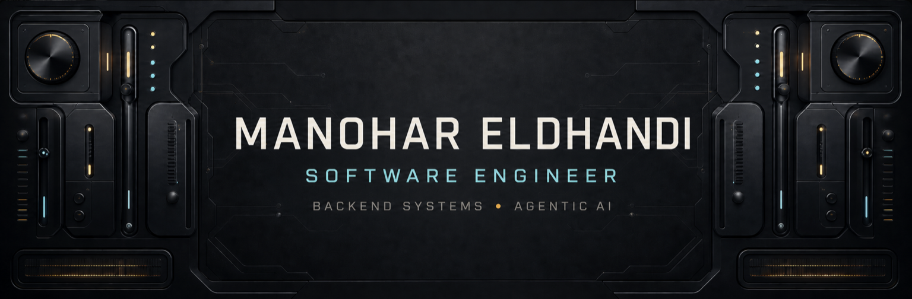

Backend
Java · Python · Spring Boot · FastAPI · REST · GraphQL

CURRENT SIGNAL
I build backend systems, security automation, and agentic AI workflows that are measured by what they improve.
Recent work includes an internal security-compliance platform and a deterministic-first LLM pipeline with code-graph analysis, guarded inference, and traceable evaluation.
ROUTE-AWARE COMMERCE
A pickup platform that synchronizes store preparation with a customer's live ETA across restaurants, pharmacies, groceries, and other verticals.
CAREER INTELLIGENCE
Evidence-grounded job discovery and user-approved resume workflows with official ATS connectors, a first-party diagnostic, and explicit trust boundaries.
TRACEABLE INFERENCE
A reproducible water-quality pipeline that evaluates candidate models and serves a voting ensemble through a traceable Django inference API.
WORKING SET
Java · Python · Spring Boot · FastAPI · REST · GraphQL
Kafka · Elasticsearch · MySQL · SQLite · WebSockets
MCP · RAG · LLM APIs · LangGraph · guarded evaluation
JUnit · pytest · Playwright · Docker · Kubernetes · CI/CD
SIGNALS BEYOND THE STACK
PROBLEM SOLVING
2141 · CodeChef 4-star 1893
OPEN SOURCE
30 days · 20 modules · 500+ learners
RECOGNITION
Top 1% of 50,000+ applicants
CONTRIBUTION CIRCUIT
The animation below is regenerated daily from the public contribution graph.